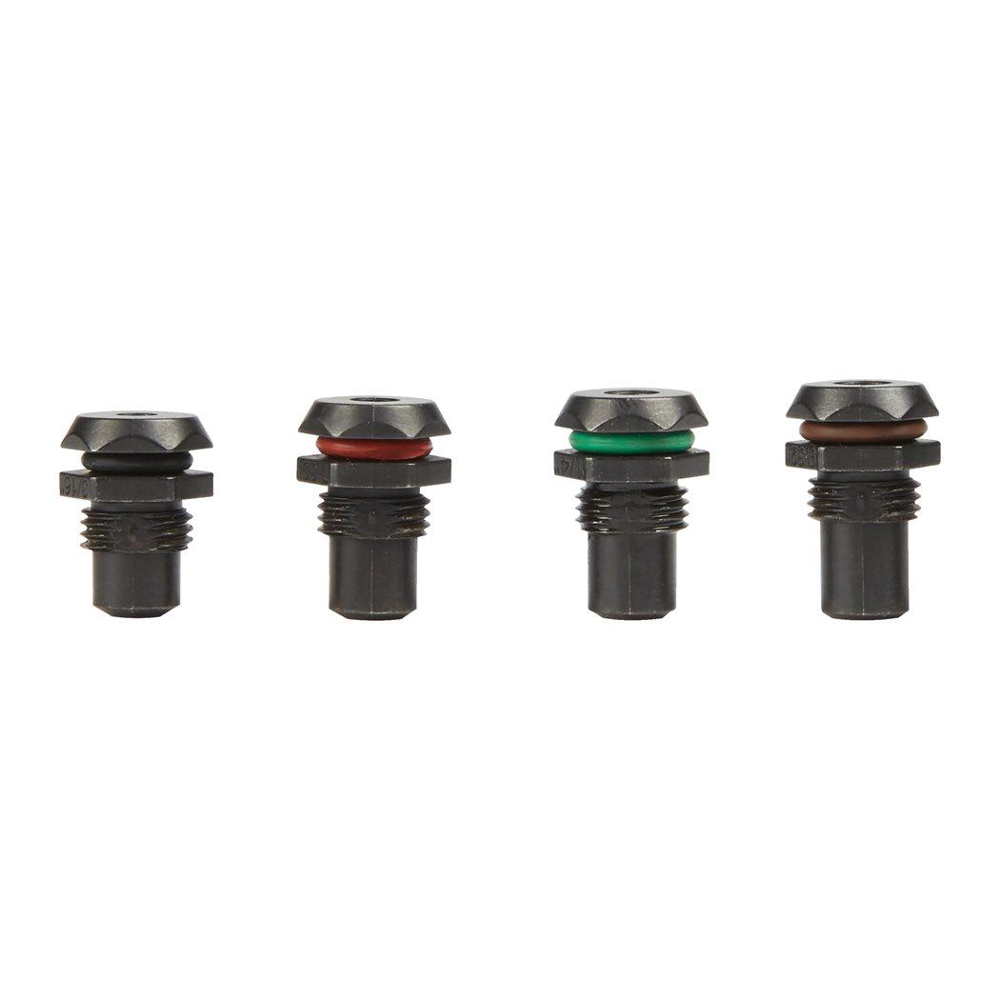

<div style="display:flex;flex-wrap:wrap;gap:8px"></div><h2>Features</h2><div><ul><li>Comes with 4 different sizes (4.8 mm, 6.0 mm, 6.4 mm and 7.0 mm) which are compatible with the M18™ FUEL™ rivet tool with ONE-KEY™</li><li>Prevents inserted rivets from falling out of the rivet tool when you hold the cordless rivet tool in any orientation</li></ul></div><div><div><h2>Information</h2><table><tr><td>Contents</td><td>4.8 mm, 6 mm, 6.4 mm, 7 mm</td></tr><tr><td>Pack quantity</td><td>4</td></tr><tr><td>Article Number</td><td>4932493546</td></tr><tr><td>EAN</td><td>4058546484170</td></tr></table></div></div>